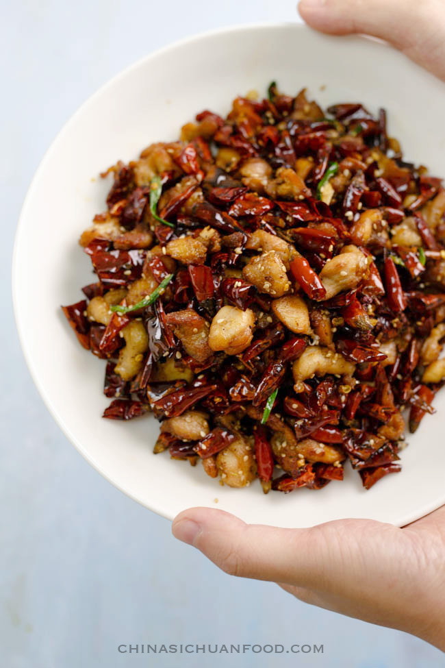

Chong Qing Chicken

Ingredients
- 1 pound dark-meat chicken, cut into 1-inch dice (no larger!)
- 1 tablespoon Shaoxing wine
- 1/2 teaspoon kosher salt
- Skin from 3 chicken thighs (or equivalent amount from other part of chicken), cut in 1-inch squares
- 3 tablespoons cornstarch
- 1 tablespoon Sichuan chili flakes or powder
- 1 tablespoon Sichuan peppercorn (double that if your peppercorns are not fresh and potent)
- 2 tablespoons minced scallion
- 2 tablespoons minced garlic
- 2 tablespoons minced ginger
- 4 to 5 tablespoons chopped zha cai (pickled mustard tuber)
- 1/4 teaspoon MSG or Totole chicken powder (as in China, but optional)
- 1 jalapeno or other fresh green chili, cut in 1/2-inch pieces
- Handful or two of Sichuan dried chili peppers, left whole for visual effect
- 2 to 3 tablespoons chili oil with flakes (preferably homemade)
- 1 teaspoon sesame oil
Recipe
- Marinate chicken pieces in Shaoxing wine and 1/2 teaspoon salt while you prepare the other ingredients. Lightly salt the chicken skin.
- Heat wok on high heat until wisps of heat start to rise and add enough canola or peanut oil to deep-fry the chicken, about 1½ cups. When oil is hot, around 350°, add chicken skin pieces and fry until they are just starting to turn golden. Remove and drain on a paper towel.
- Mix cornstarch and chili powder in a large sealable baggie. Add the chicken pieces, leaving any accumulated juices behind. Shake the chicken pieces in the cornstarch mixture until they are lightly coated.
- Return the wok oil to about 350° to 375° and fry the chicken pieces until they are crispy and golden brown, then remove to drain on paper towels. Fry chicken in two batches so you do not overcrowd it.
- Pour off oil to a bowl, clean the wok and return to heat. When hot, add back 3 tablespoons of the frying oil. Heat briefly on medium heat, then add the Sichuan peppercorn, scallion, garlic and ginger and cook until softened. Stir-fry vigorously from now on, as you don't want anything to brown; lower heat if you need to. Add the zha cai, MSG (if using), green chili and dried chilies and cook until the chilies are softened and just starting to turn color.
- Add back the chicken and chicken skin, stir-fry to combine, and add the chili oil with flakes—about half oil, half flakes, adding more oil if the dish is too dry. Turn off heat, stir in sesame oil, and remove to a serving platter.